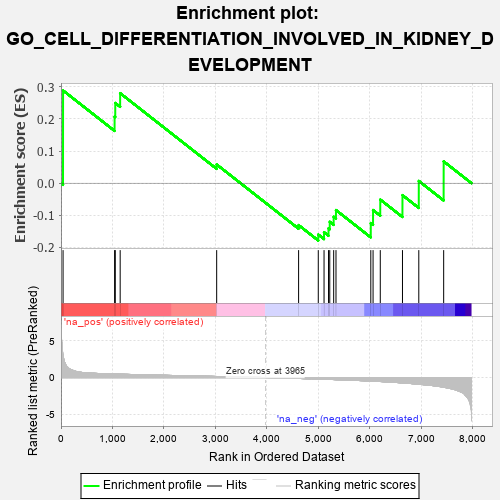
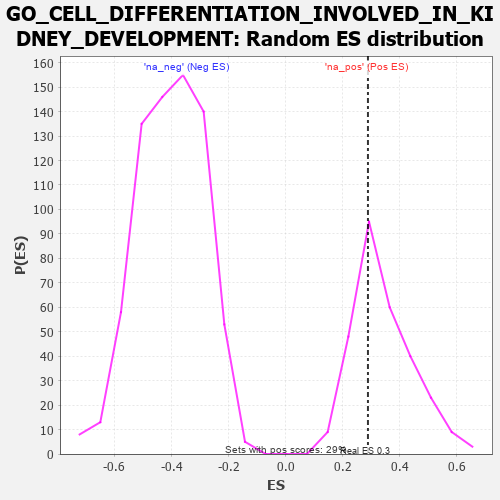

| | | Dataset | 7d |
| Phenotype | NoPhenotypeAvailable |
| Upregulated in class | na_pos |
| GeneSet | GO_CELL_DIFFERENTIATION_INVOLVED_IN_KIDNEY_DEVELOPMENT |
| Enrichment Score (ES) | 0.2885338 |
| Normalized Enrichment Score (NES) | 0.8507243 |
| Nominal p-value | 0.630662 |
| FDR q-value | 0.88345784 |
| FWER p-Value | 1.0 |
Table: GSEA Results Summary

Fig 1: Enrichment plot: GO_CELL_DIFFERENTIATION_INVOLVED_IN_KIDNEY_DEVELOPMENT
Profile of the Running ES Score & Positions of GeneSet Members on the Rank Ordered List
| PROBE | GENE SYMBOL | GENE_TITLE | RANK IN GENE LIST | RANK METRIC SCORE | RUNNING ES | CORE ENRICHMENT | | 1 | SIX2 | | | 40 | 3.152 | 0.2885 | Yes |
| 2 | YAP1 | | | 1041 | 0.475 | 0.2071 | No |
| 3 | MEF2C | | | 1054 | 0.473 | 0.2497 | No |
| 4 | MTSS1 | | | 1149 | 0.454 | 0.2801 | No |
| 5 | WNT4 | | | 3023 | 0.146 | 0.0582 | No |
| 6 | GATA3 | | | 4614 | -0.120 | -0.1304 | No |
| 7 | PROM1 | | | 4996 | -0.197 | -0.1599 | No |
| 8 | MMP9 | | | 5108 | -0.227 | -0.1527 | No |
| 9 | SMO | | | 5195 | -0.247 | -0.1406 | No |
| 10 | GPR4 | | | 5219 | -0.250 | -0.1202 | No |
| 11 | MAGI2 | | | 5295 | -0.269 | -0.1045 | No |
| 12 | TCF21 | | | 5340 | -0.283 | -0.0837 | No |
| 13 | PRKX | | | 6016 | -0.477 | -0.1242 | No |
| 14 | JAG1 | | | 6060 | -0.494 | -0.0836 | No |
| 15 | MYO1E | | | 6200 | -0.537 | -0.0511 | No |
| 16 | WWTR1 | | | 6631 | -0.729 | -0.0373 | No |
| 17 | FAT4 | | | 6948 | -0.901 | 0.0069 | No |
| 18 | LHX1 | | | 7431 | -1.305 | 0.0679 | No |
Table: GSEA details [plain text format]

Fig 2: GO_CELL_DIFFERENTIATION_INVOLVED_IN_KIDNEY_DEVELOPMENT: Random ES distribution
Gene set null distribution of ES for GO_CELL_DIFFERENTIATION_INVOLVED_IN_KIDNEY_DEVELOPMENT